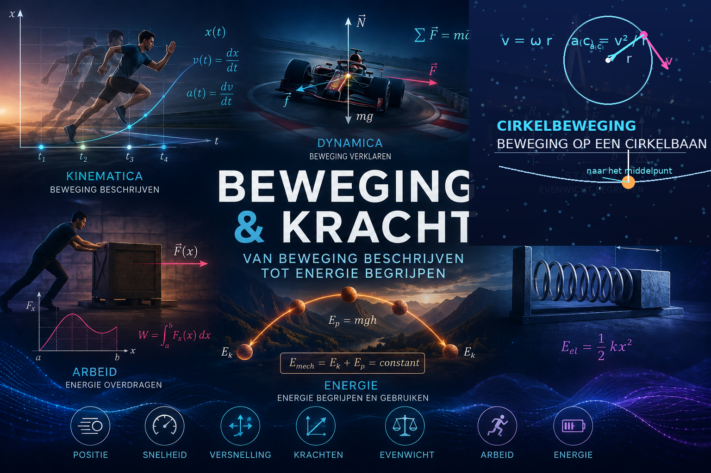

Overzicht van de hoofdstukken
Beweging is overal. Een bal vliegt door de lucht, een auto versnelt, een satelliet beweegt rond de aarde en een voorwerp komt tot stilstand wanneer het wordt afgeremd. Maar hoe kunnen we zulke bewegingen nauwkeurig beschrijven en voorspellen?
In dit thema beginnen we met de kinematica: de studie van beweging zonder ons meteen af te vragen waardoor die beweging veroorzaakt wordt. We beschrijven de positie van een voorwerp als functie van de tijd en onderzoeken snelheid en versnelling. Grafieken en wiskundige modellen helpen ons om verschillende soorten beweging te analyseren.
Daarna stellen we een nieuwe vraag: waarom verandert een beweging? Met de wetten van Newton onderzoeken we het verband tussen kracht, massa en versnelling. We leren krachten vectorieel voorstellen en combineren en gebruiken deze ideeën om bewegingen in uiteenlopende situaties te verklaren en te voorspellen.
Ook beweging langs een cirkel vraagt bijzondere aandacht. Hoewel de grootte van de snelheid constant kan blijven, verandert de snelheidsvector voortdurend van richting. We onderzoeken welke versnelling en welke resulterende kracht daarvoor nodig zijn.
Ten slotte bekijken we beweging vanuit een ander perspectief. Met arbeid en energie kunnen we veel mechanische problemen beschrijven zonder de beweging op ieder ogenblik afzonderlijk te onderzoeken. We bestuderen energieomzettingen en onderzoeken ook wat arbeid betekent wanneer een kracht niet constant is.
Doorheen het thema verbinden we fysica voortdurend met wiskunde. Functies en grafieken beschrijven beweging, afgeleiden verbinden positie, snelheid en versnelling en integralen krijgen een concrete betekenis bij onder andere verplaatsing en arbeid.
Zo bouwen we stap voor stap een samenhangend model van de mechanica: van het beschrijven van beweging naar het verklaren ervan, en van krachten naar energie.
Thema1-Beweging/1-Beweging Thema1-Beweging/2-ERVB Thema1-Beweging/3-Vallen_werpen Thema1-Beweging/4-2D-beweging Thema1-Beweging/5-Cirkels Thema1-Beweging/6-Kracht Thema1-Beweging/7-Kracht_cirkel Thema1-Beweging/8-Arbeid-Energie Thema1-Beweging/9-Formules
Overzicht van de hoofdstukken
Overzicht van de hoofdstukken